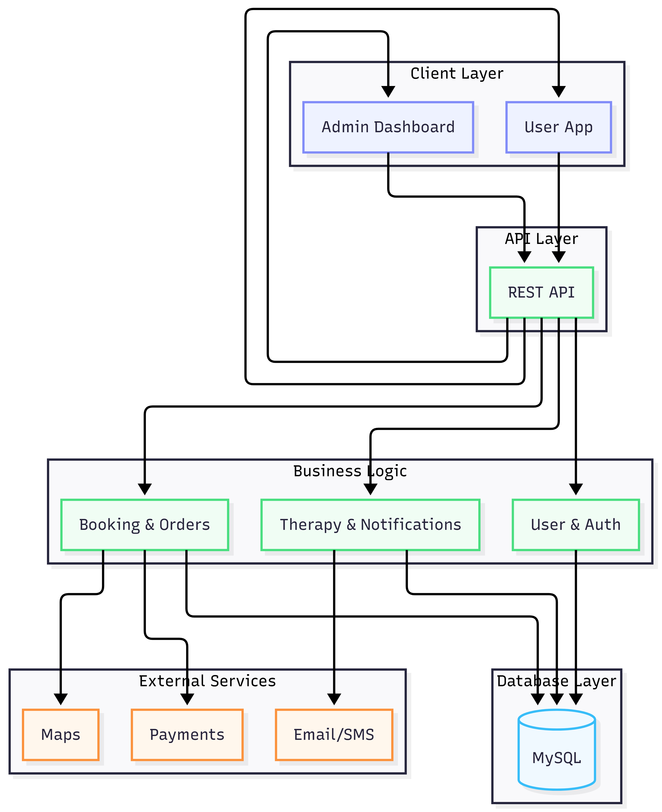

This document outlines the architectural and system design for the Wellness Marketplace for Alternative Therapies. The design focuses on fundamental software engineering principles to ensure the system is not only functional but also scalable, efficient, and maintainable as the user base grows.
The system design is guided by the following core principles:
The system follows a Layered Micro-Kernel Architecture (currently a modular monolith designed for future microservices transition).

Figure 1: High-level visual representation of the wellness marketplace tech stack.
Figure 2: Detailed sequence and data flow for user orders and therapy sessions.
The Spring Boot backend is stateless. Session
information is not stored in memory but passed via JWT
tokens. This allows the Load Balancer to distribute traffic
across N number of backend instances.
As the number of patients browsing practitioners increases, the
database read load will spike. - Primary Node: Handles
all WRITE operations (Registration, Booking, Updates). -
Read Replicas: Multiple nodes handle READ
operations (Searching practitioners, viewing profiles). This ensures
that heavy browsing doesn’t slow down the booking process.
To reduce database hits for static or slow-changing data: - Practitioner Profiles: Frequently viewed profiles are cached in Redis. - Session Metadata: Temporary state for the booking flow. - Rate Limiting: Preventing API abuse by tracking request counts per IP in Redis.
Non-critical tasks are moved out of the main request-response cycle
to ensure fast user feedback. - Notifications: Sending
emails or push notifications is handled by a background worker (e.g.,
using Spring @Async or RabbitMQ). - AI
Recommendations: Calculating personalized suggestions is done
asynchronously so it doesn’t block the UI.
Critical columns such as email,
practitioner_id, specialization, and
session_date are indexed to ensure O(log n)
search complexity instead of O(n).
The database is normalized to 3rd Normal Form (3NF) to ensure data integrity and reduce redundancy.
The system’s data architecture is normalized to 3rd Normal Form (3NF) to ensure data integrity. The core entities include User, Practitioner Profile, Therapy Session, Order, and Notification, as visualized in the preceding flow diagrams.
The system implements a multi-layered security approach:
@PreAuthorize) ensures that only Admins can verify
practitioners and only Practitioners can manage their own
therapies.By applying these software engineering principles, the Wellness Marketplace is transformed from a basic application into a production-ready system. The combination of stateless backend scaling, database replication, distributed caching, and asynchronous workflows ensures that the platform can handle thousands of concurrent users while maintaining high performance and security.
Prepared by: Maaz Shaikh Course: Software Engineering | Walchand Institute of Technology Project: Wellness Marketplace for Alternative Therapies Version: 1.0 | Date: April 2026